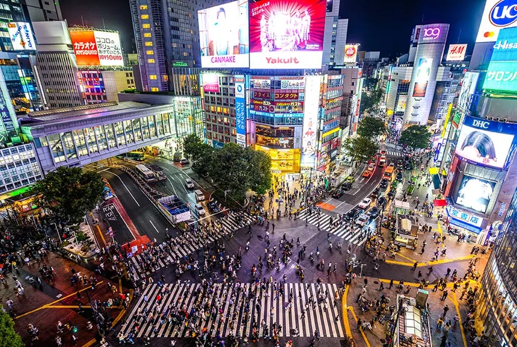

Day 1: Exploring Tokyo
I started my journey in the bustling heart of Japan - Tokyo!! From the vibrant lights of Shibuya to a peaceful walk in Ueno Park, it was a day packed with contrasts.
- 🗼 Tokyo Tower
- 🍜 Ramen at Ichiran
- 🎮 Gaming in Akihabara
I started my journey in the bustling heart of Japan - Tokyo!! From the vibrant lights of Shibuya to a peaceful walk in Ueno Park, it was a day packed with contrasts.